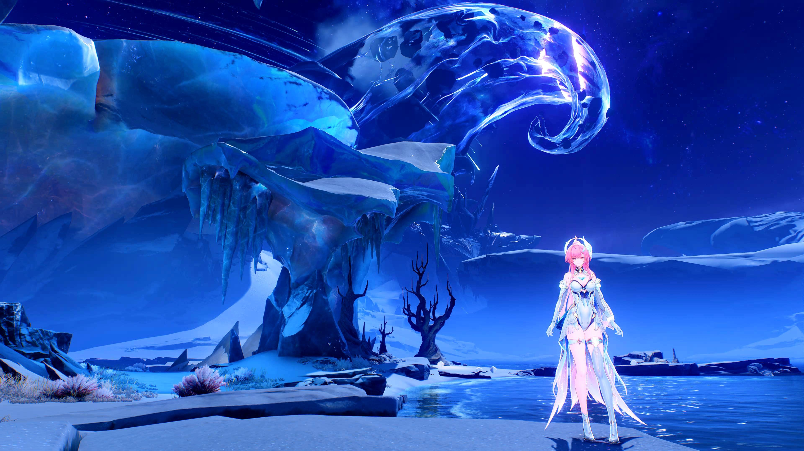
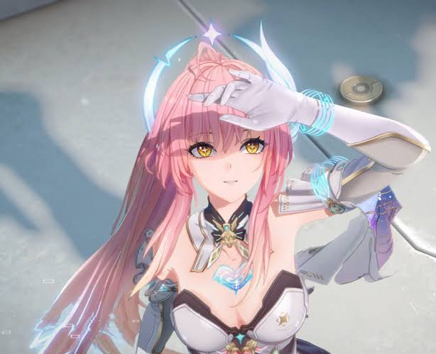

Visit Startorch
Visit the modern School with high Technology
Top Three Activities to do at Startorch

See the High Tech Robots
Startorch has different robots for various Tasks

Motorcycle Expierence
Borrow our Motorcycles and drive trough Startorch

Stargazing
Right outsite the Academy there are baeutiful places to Stargaze

Your Guide
"Hiii, I'm Aemeath, your guide today! If you can't see me, just follow the person waving at empty air and look up for the best views, because I know every secret spot under the stars~ ☆"
Come and Explore outside of Startorch to the Roya Frostlands

The Frostlands Surface is the original homeland of the Roya before its destruction and freezing during the Lament, and the creation of Lahai-Roi in the subterranean cavern beneath. The Polar Collective would establish diplomatic ties with the Roya and establish its Research Institute on the sword that connects the tropical realm to the surface and holds it up. It is where the Exostrider slumbers, awaiting its final duty.
Thank you for choosing our Tour !
